Specifications
- Path
- Descriptions > 33 BRAKES > 3380 HANDBRAKE > 3380A HANDBRAKE CONTROL AND LINKAGE > Specifications
- Kind
- system description
- Applies to
- all engines; all production periods
- Interactive page
- https://sloeber94.github.io/elrnDB-lThss/en/#/153699
Applies to: all engines; all production periods
The advent of increasingly sophisticated electronic systems has made it possible to use more and more advanced safety systems such as the E.P.B., or Electric Parking Brake.
The advantages of an electric parking brake are as follows:
- a switch is used instead of a conventional lever and less effort is required to release the parking brake,
- because the parking brake control wires are electrical leads, we avoid the problem of cables binding or breaking,
- greater safety due to ABS-like software that prevents the parking brake from locking when engaged while the car is in motion,
- maximum brake performance under all service conditions,
- safe for children.
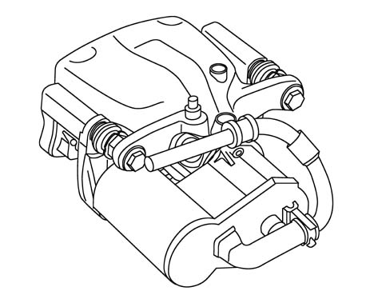
The Autoapply system essentially carries out two functions:
- automatic parking brake activation when the engine is turned off. When the engine is turned of, the parking brake goes on and cannot then be released even using the special release switch (safety measure). The parking brake can only be released after the engine has been restarted. The driver can use the central display to deactivate this function for one cycle, i.e. order the system not to engage the parking brake automatically when the engine is turned off.
- automatic parking brake activation when the driver's door is opened with the engine running. If the driver stops the car without turning off the engine and wishes to get out of the car, this intention is communicated to the control unit by means of a switch on the driver's door and the parking brake is automatically engaged.
DDA (Drive Away Assistant)
The Drive Away Assistent or "Hillholder" is used to hold the car's position on a hill without the car rolling back involuntarily. If the car is stopped on an uphill or downhill gradient and the handbrake is applied, the handbrake is released automatically when the accelerator pedal is pressed without any other intervention by the driver.
A gradient sensor built into the control unit detects body movement on the slope and releases the parking brake. The control unit software is programmed to release the parking brake more slowly downhill than uphill. This system is advantageous because the driver still has enough time to stop the car if the accelerator pedal is pressed by mistake.
RWU (Rear Wheel Unlocker)
The main advantage of this system is the ability to brake the wheels dynamically and independently of one another. If the parking brake switch is pressed while the car is in motion, the control unit receives the signal and interprets it as an emergency situation (e.g. due to a fault in the hydraulic braking system). It takes action to restore the car to normal by braking the rear wheels alternately to prevent the car skidding due to the rear axle locking.
If the hydraulic braking system should fail, the RWU system brings the car to a safe halt.
Engine ignition
Engine ignition (cranking) with accelerator pedal pressed. Under these conditions (engine on and accelerator depressed), the car cannot be driven away because the EPB system will not enable brake release. Simply raise your foot off the accelerator (100 msec is long enough) in order to drive off again normally (as part of the same manoeuvre, without the need to turn off the engine and start again).
Key off manoeuvre
Key off manoeuvre (with consequent auto-apply) and engine start-up with fast drive away (within 1.2 seconds). Driving away may be difficult under these conditions. The problem arises because the EPB system takes about 1.2 seconds to lock the rear wheels upon key-off: this is a physical time lapse determined by the timing of the electrical actuators. If the driver attempts to drive away again during brake application (auto apply), the manoeuvre will be impossible or difficult to perform. This is because EPB system status is still as before: brake application instead of release. All you have to do is wait a few seconds in order to carry out the drive away manoeuvre correctly (also as part of the same manoeuvre, without the need to turn off the engine and turn it back on again).
System components
The electronic parking brake consists essentially of four main components:
Electronic control unit
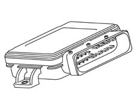
Colette caliper
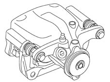
Actuator
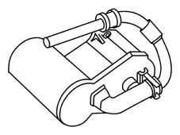
Operating switch
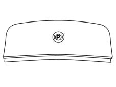
Block diagram
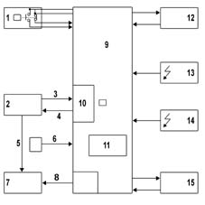
- 1 Switch control
- 2 HIGH or LOW-SPEED CAN line
- 3 Information from the car
- 4 System status
- 5 Red warning light
- 6 Key On/Off signal
- 7 Control panel
- 8 Yellow fault warning light
- 9 Control unit (ECU)
- 10 CAN HIGH-SPEED in/out line
- 11 Tilt sensor
- 12 Right rear brake caliper + reduction unit
- 13 Main battery
- 14 Supplementary battery
- 15 Left rear brake caliper + reduction unit
The parking brake may be released by the control button or by the rear brake release system when the drive presses the accelerator pedal and engages gear with the intention of moving off when the car has previously been standing in static mode, i.e. still.
Application of the parking brake upon a request by the driver with car speed > 0 km/h takes place via electromechanical actuators to ensure vehicle stability under all grip and performance requirement conditions. The function is available even with the car in motion when the driver intends to set off again.
Electronic Control Unit
The electronic control unit is responsible for processing signals received from the Hall sensor, from the parking brake switch and from the vehicle CAN network bus and also for controlling an electric motor inside the actuator.
The control unit is housed in a separate housing inside the car luggage compartment.
When the engine is on, the control unit is in active mode and runs continual automatic checks. A short time period after turning off the engine, the control unit goes into Sleep mode to save energy (rest status with energy saving). It can be woken up by operating the switch or restarting the engine.
The EPB system is supplied by two separate leads, each protected by a 20A fuse. The control unit is supplied by both by means of diodes so that it can continue to operate even when one of the two leads is faulty. Each actuator works indendently. If a fault occurs in one actuator, the other can work without restrictions.
Input signals:
- Position of ignition key
- Driver's intention, via switch
- Engine position, via Hall sensor
Output signals:
- Warning light indiating fault inside car
- Warning light indiating operation inside car
- Engine control inside actuator
The control unit is also connected to the CAN network (car speed signal) and power supply.
Ignition key on: connection to CAN network must be present
Engine on: Hall sensor pulse
Running speed drops: Uphill gradient, or parking brake switch operated
Driving speed changes: Gradient sensor signal.
Replacement values are used in place of the missing signals if possible. If the car speed signal is missing from the CAN network, the gradient sensor signal is used after applying a filter.
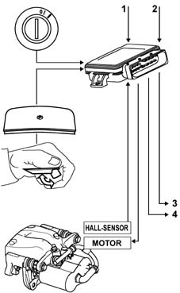
- 1 CAN line
- 2 Power supply
- 3 Anomaly warning light
- 4 Operation warning light
Electronic control unit pin-out diagram
Pin | Function |
|---|---|
1 | Not connected |
2 | Not connected |
3 | Diagnosis K |
4 | IGN S1 |
5 | Not connected |
6 | Not connected |
7 | Not connected |
8 | Fault warning light |
9 | Not connected |
10 | Not connected |
11 | DD_SUPPLY_2 |
12 | Right actuator + |
13 | B+ Right actuator |
14 | Left actuator + |
15 | B+ Left actuator |
16 | CAN H |
17 | CAN L |
18 | DD_APP_NO |
19 | DD_APP_NC |
20 | DD_SUPPLY_1 |
21 | SUPPLY Hall sensor left actuator |
22 | Key on signal |
23 | Hall sensor left actuator signal |
24 | Earth |
25 | Hall sensor right actuator signal |
26 | SUPPLY Hall sensor right actuator |
27 | Right actuator - |
28 | Right actuator earth |
29 | Left actuator - |
30 | Left actuator earth |
Brake caliper
Specifications
The brake caliper consists of a Colette floating caliper and a piston. The hydraulic brake caliper function does not differ from that of a conventional braking system.
When the service brake is operated, a certain amount of hydraulic pressure builds up in the braking system. This pressure is applied to the piston, which moves to press the internal pad against the disc.
This force slides the box on the guide bolts and presses the outer pad against the disc.
The pad is adjusted in relation to disc clearance by means of a procedure similar to that used for the fixed caliper, i.e. using controlled deformation of the piston seal.
Safety instructions
The adjustment system must never be dismantled for safety reasons.
Replace the entire box if the system is damaged.
Operation
The piston and pad must move toward the disc to rest the pad against the disc and begin the braking manoeuvre. During normal brake system operation, this movement is brought about by pressure exercised by the brake fluid on the piston. The effect must be achieved mechanically to operate the parking brake independently of this procedure. In the case of the EPB, it is achieved by means of a worm screw fixed to a threaded rod.
The worm screw and threaded rod are built into the brake piston. The worm screw is flattened and is shaped to match the piston to ensure it is not subject to twisting.
If the threaded rod turns on the fitting that joins it to the oblique gear set inside the actuator, the worm screw moves the piston in the direction of the brake pad to operate the brake disc and hence the brake. The brake can be released only by turning the threaded rod and restoring it to its original position because of the self-locking capacity of the thread.
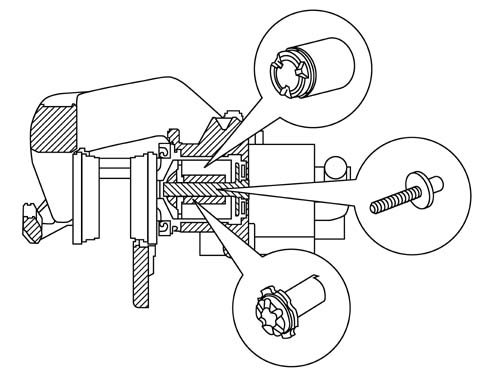
The worm screw is flattened and is shaped to match the piston to ensure it is not subject to twisting.
The counter-motion is provided at the beginning of the piston sealing ring.
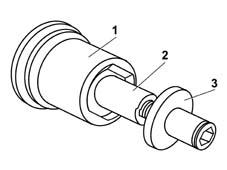
- 1 - Piston
- 2 - Worm screw
- 3 - Threaded rod
Actuator
The motor operates a toothed belt that in turn operates the drive wheel of a gear set with oblique discs. The gear set is fastened directly to the brake threaded rod.
The toothed belt actuator and oblique disc gear set are fitted with a transmission ratio of 1:150. In other words, the engine must turn 150 times for one turn of the threaded rod (corresponding to 1 mm of operation).
The actuator case is made out of plastic reinforced with 3 mm thick fibreglass.
Its main functions are as follows:
- to keep the system watertight
- to protect against gravel chips and heat generated between the warm pedal and electrical components inside the actuator
The movements of a Hall sensor fitted to the engine pinion are used to control the motor and also set the air flow. After reaching an operating force of zero, an air flow of 0.5 is set, equivalent to 75 rpm.
Operating switch
The operating switch is located on the central console in front of the gear lever. It is a key switch with flexible return. The operation warning light on the car display tells the drier that the parking brake is on.
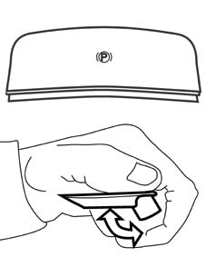
Additional release switch
This switch releases the rear brake calipers in the case of emergency, i.e. if the main switch does not work for any reason. To release the calipers, operate the emergency release located in the luggage compartment above or near the supplementary battery.
Warning lights
The driver can make use of three warning lights.
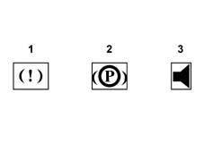
- 1- Red operation warning light
- 2 - Yellow fault warning light
- 3 - Buzzer warning light
The fault warning light comes on in the case of faulty operation detected by the system (regardless of fault severity). In the case of CAN network errors that are corrected automatically, the fault warning light goes off without the driver's intervention. Other errors are saved when the engine is turned off. When the engine is turned back on, they are temporarily deleted until the software detects them again during the first cycle, unless they have been repaired in the meantime.
If errors are present, the fault warning light stays on for a further 20 minutes after the engine has been turned of. After that, the control unit goes into sleep mode. If the operation switch is pressed again, however, the control unit rewakes and the fault warning light indicates an error for a further 20 minutes.
Whenver the operation switch is pressed when an error is present, a buzzer is activated inside the car to attract the driver's attention. This makes it annoying to continue the trip with an error present.
The red light comes on when maximum operating force is reached and goes off when the air flow is established at the moment the parking brake is released. Unlike conventional parking brakes, where the operation warning light comes on when the lever is moved through a short travel, with the EPB system, the warning light comes on only when the car is at a complete standstill.
If the brake does not achieve the required operating force (e.g. voltage is too low), the operation warning light flashes. If the fault warning light is faulty, the red warning light flashes to inform the driver of the problem.
User acoustic/visual warning strategies
The following table shows lighted/acoustic warning strategies for the driver:
Mode | Fault warning light (yellow) | Brake system warning light (!) | Buzzer | |
|---|---|---|---|---|
CAR AT STANDSTILL | ||||
APPLIED | NO | YES | NO | |
RELEASED | NO | NO | NO | |
SYSTEM FAILURE | ||||
APPLIED | YES | YES | NO | |
RELEASED | YES | NO | NO | |
FAULT DURING CONTROL | ||||
APPLICATION | YES | YES (flashing) | YES (30 S) | |
RELEASED | YES | YES | YES (30 S) | |
CAR IN MOTION | ||||
APPLIED | NO | YES | NO | |
RELEASED | NO | NO | NO | |
SYSTEM FAILURE | ||||
APPLIED | Not applicable | Not applicable | Not applicable | |
RELEASED | YES | NO | NO | |
FAULT DURING CONTROL | ||||
APPLICATION | YES | YES (flashing) | YES | |
RELEASED | Not applicable | Not applicable | Not applicable | |
KEY IN OFF POSITION | ||||
APPLIED | NO | NO | NO | |
RELEASED | NO | NO | NO | |
SYSTEM FAILURE | ||||
APPLIED | NO | NO | ||
RELEASED (after operation on NIT node) | NO | NO | NO | |
FAULT DURING CONTROL | ||||
APPLIED | YES (3 mins. from Panel Key Off) | YES | YES | |
RELEASED | Not applicable | Not applicable | Not applicable | |
CAR MAINTENANCE | ||||
APPLIED | YES | YES (flashing) | ||
RELEASED | YES | YES (flashing) | NO | |
SYSTEM FAILURE | YES | YES (flashing) | NO |
The following table shows lighted/acoustic warning strategies for the driver if the car is in motion:
SYSTEM STATUS | Fault warning light (yellow) | Brake system warning light (red) | Buzzer | NOTES |
|---|---|---|---|---|
APPLICATION WITH CAR IN MOTION | NO | YES | YES | Buzzer throughout application period |
Recovery strategies
The system offers three performance levels in the case of a fault:
- Defect tolerated: if not enough data/information is availalbe, the system can calculate parameters that allow it to continue working at at a reduced level. The user will be warned by a buzzer/warning light.
- Block of one channel, left/right rear brake caliper: the system continues working with the aid of the remaining channel. The user will be warned by a buzzer/warning light.
- System block: more than one fault causes the system block. The user will be warned by a buzzer/warning light.